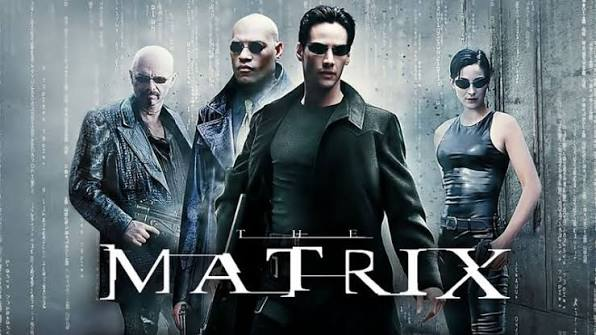
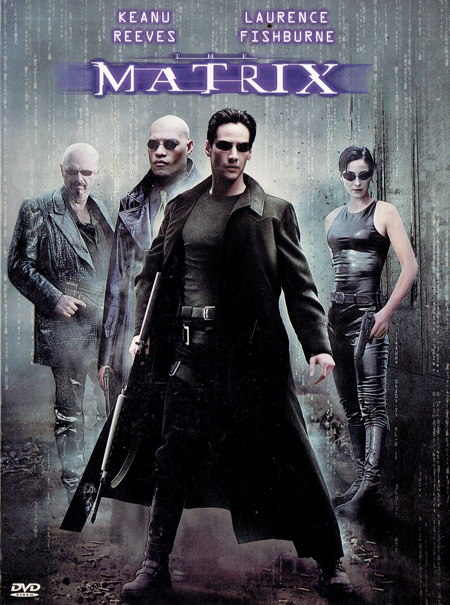

O jovem programador Thomas Anderson é atormentado por estranhos pesadelos em que está sempre conectado por cabos a um imenso sistema de computadores do futuro. À medida que o sonho se repete, ele começa a desconfiar da realidade. Thomas conhece os misteriosos Morpheus e Trinity e descobre que é vítima de um sistema inteligente e artificial chamado Matrix.

Eu gosto da franquia porque vai muito além de um filme de ação. A história faz refletir sobre a realidade, a liberdade e as escolhas que fazemos. Além disso, os efeitos especiais e as cenas de luta foram inovadores para a época e continuam impressionantes. O personagem Neo também é muito interessante, pois sua jornada mostra crescimento, coragem e busca pela verdade.